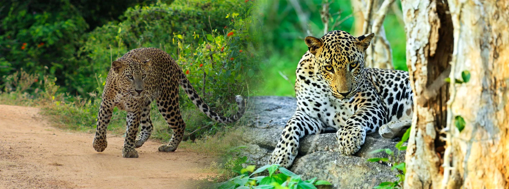
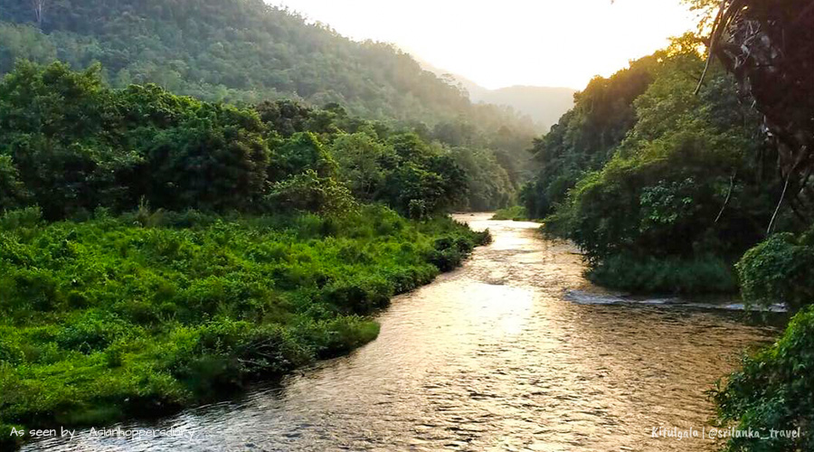
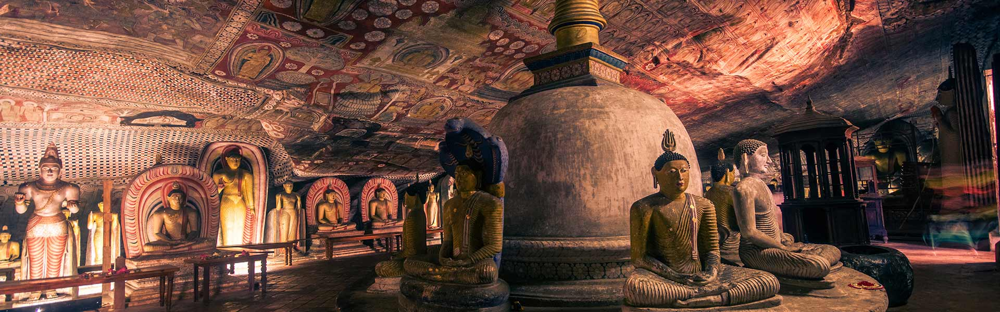

Find Your Vibe
From leopard tracking and elephant encounters to birdwatching lagoons, coastal safaris, and nearby cultural stops — Yala offers a full southern Sri Lanka experience.

Leopard & Wildlife Safari
Yala has the world's highest density of wild leopards — expert trackers give you the best chance of a sighting.
- Highlights:
- Leopard Tracking — Block 1
- Elephant Herd Sightings
- Sloth Bear Encounters
- Crocodile Waterhole Stops

Birdwatching & Lagoons
Over 200 bird species inhabit Yala's lagoons, scrublands, and coastal wetlands — a paradise for birdwatchers.
- Highlights:
- Painted Stork & Flamingo
- Black-Necked Stork
- Sarus Crane Sightings
- Coastal Lagoon Drives

Coastal & Sunset Safari
Yala's southern edge meets the Indian Ocean — catch the sunset over the coast from inside the park.
- Highlights:
- Patanangala Rock Beach
- Sunset Coastal Jeep Drive
- Sea Turtle Nesting Sites
- Whale Watching — Mirissa

Nearby Culture & Coast
Combine Yala with Kataragama temple, Tissamaharama reservoir, and the southern beach towns.
- Highlights:
- Kataragama Sacred Town
- Tissamaharama Reservoir
- Bundala National Park
- Tangalle Beach & Lagoon